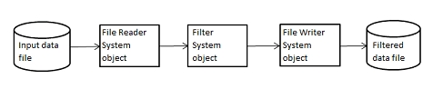

What Are System Objects?
A System object™ is a specialized MATLAB® object. Many toolboxes include System objects. System objects are designed specifically for implementing and simulating dynamic systems with inputs that change over time. Many signal processing, communications, and controls systems are dynamic. In a dynamic system, the values of the output signals depend on both the instantaneous values of the input signals and on the past behavior of the system. System objects use internal states to store that past behavior, which is used in the next computational step. As a result, System objects are optimized for iterative computations that process large streams of data in segments, such as video and audio processing systems. This ability to process streaming data provides the advantage of not having to hold large amounts of data in memory. Use of streaming data also allows you to use simplified programs that use loops efficiently.
For example, you could use System objects in a system that reads data from a file, filters that data and then writes the filtered output to another file. Typically, a specified amount of data is passed to the filter in each loop iteration. The file reader object uses a state to track where in the file to begin the next data read. Likewise, the file writer object tracks where it last wrote data to the output file so that data is not overwritten. The filter object maintains its own internal states to ensure that the filtering is performed correctly. This diagram represents a single loop of the system.

These advantages make System objects well suited for processing streaming data.
Many System objects support:
Fixed-point arithmetic (requires a Fixed-Point Designer™ license)
C code generation (requires a MATLAB Coder™ or Simulink® Coder license)
HDL code generation (requires an HDL Coder™ license)
Executable files or shared libraries generation (requires a MATLAB Compiler™ license)
Note
Check the product documentation to confirm fixed-point, code generation, and MATLAB Compiler support for the specific System objects you want to use.
System objects use a minimum of two commands to process data:
Creation of the object (such as,
fft256 = dsp.FFT)Running data through the object (such as,
fft256(x))
This separation of creation from execution lets you create multiple, persistent, reusable objects, each with different settings. Using this approach avoids repeated input validation and verification, allows for easy use within a programming loop, and improves overall performance. In contrast, MATLAB functions must validate parameters every time you call the function.
In addition to the System objects provided with System Toolboxes, you can create your own System objects. See Create System Objects.
Running a System Object
To run a System object and perform the operation defined by its algorithm, you call the object as if
it were a function. For example, to create an FFT object that uses the
dsp.FFT
System object, specifies a length of 1024, and names it dft,
use:
dft = dsp.FFT('FFTLengthSource','Property','FFTLength',1024);
x,
use:dft(x);
asysobj().When you run a System object, it also performs other important tasks related to data processing, such as initialization and handling object states.
Note
An alternative way to run a System object is to use the step function. For example, for an object
created using dft = dsp.FFT, you can run it using
step(dft,x).
System Object Functions
After you create a System object, you use various object functions to process data or obtain information from
or about the object. The syntax for using functions is <object function
name>(<system object name>), plus possible extra input arguments. For
example, for txfourier = dsp.FFT, where txfourier is a
name you assign, you call the reset function using
reset(txfourier).
Common Object Functions
All System objects support the following object functions. In cases where a function is not applicable to a particular object, calling that function has no effect on the object.
| Function | Description |
|---|---|
Run the object function, orstep | Runs the object to process data using the algorithm defined by that object. Example: For the object
As part of this processing, the object initializes resources, returns outputs, and updates the object states as necessary. During execution, you can change only tunable properties. Both ways of running a System object return regular MATLAB variables. |
release | Release resources and allow changes to System object property values and additional characteristics that are limited while the System object is in use. |
reset | Resets the System object to the initial values for that object. |
nargin | Returns the number of inputs accepted by the System object algorithm
definition. If the algorithm definition includes varargin,
the nargin output is negative. |
nargout | Returns the number of outputs accepted by the System object algorithm
definition. If the algorithm definition includes varargout,
the nargout output is negative. |
clone | Creates another object of the same type with the same property values |
isLocked | Returns a logical value indicating whether the object has been called and
you have not yet called release on the object. |
isDone | Applies only to source objects that inherit from matlab.system.mixin.FiniteSource.
Returns a logical value indicating whether the end of the data file has been
reached. If a particular object does not have end-of-data capability, this
function value always returns false. |